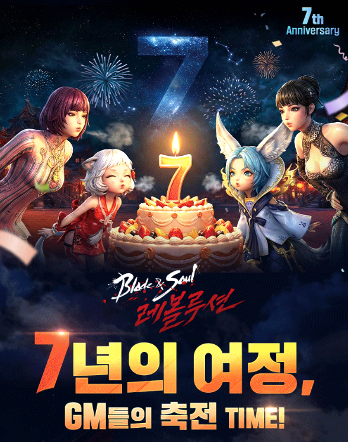
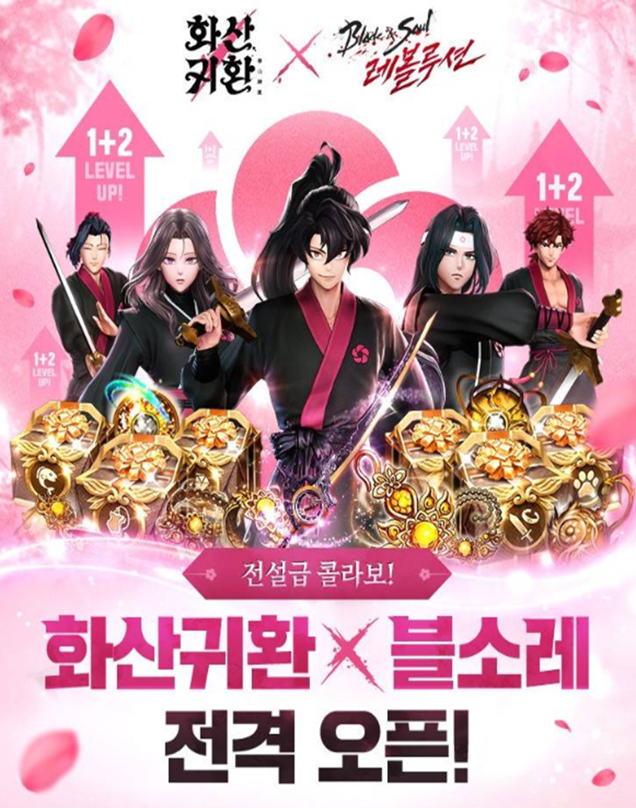

경력 요약
허재석
기획과 운영을 아우르는 올라운더
- #라이브 서비스
- #프로젝트 관리
- #콘텐츠 기획 및 제작
- #데이터 및 고객 의견 분석
- #생성형 AI 활용
유니티 게임을 기획해 출시해 본 경험부터 MMORPG 라이브 운영까지 맡아 왔습니다.
기획과 운영, 데이터와 콘텐츠를 함께 다루며 실무 범위를 넓혀 가고 있습니다.
기본 정보
경력과 학력
경력
총 1년 9개월
아이지에스 (IGS)
2024.12 ~ 현재 · 넷마블 계열사
- 블레이드&소울 레볼루션 국내·글로벌 서비스
- 라이브 서비스 운영
- 프로젝트 관리
학력
2020.03 ~ 2024.02
유한대학교
스마트콘텐츠학과 모바일앱전공
- 재학 중 모바일 앱 2종 기획·출시
- 창작 보드게임 1종 기획 · 실물 카드 제작
실무 경험
현업에서 라이브 서비스를 운영하며 담당한 업무입니다.
[라이브 서비스 운영] 블레이드&소울 레볼루션
아이지에스 · 2024.12 ~ 현재 · 국내 및 글로벌 4개 권역
📝 프로젝트 관리
3명 중 기여도 30%담당 업무
- 블레이드&소울 레볼루션 국내·글로벌 업무 관리
- 업데이트 일정 관리 및 패치노트, 이벤트, 상품 안내 등록·관리
- 글로벌 4개 권역(영어·일본어·중국어 번체·태국어) 푸시 및 공지 번역 관리
🏆 핵심 성과
- 흩어져 있던 업데이트 일정과 가이드를 단일 통합 캘린더로 데이터베이스화해, 부서 간 업무 예측 가능성을 높이고 일정 누락을 사전에 차단
- 분산돼 있던 유저 동향 취합 리포트를 연간 통합 시트 한 곳으로 모아, 매번 파일을 찾아 열고 양식을 맞추던 반복 작업을 제거
- 다국어 번역 파이프라인의 마일스톤을 관리해 글로벌 공지·푸시 일정 지연 없이 운영
📝 라이브 서비스 이슈 대응
3명 중 기여도 40%담당 업무
- 업데이트 예상 이슈 관리 및 이슈 대응 공지, 임시 점검 진행
- 유관 부서와 이슈 대응 방향 협의 및 가이드라인 수립
- 글로벌 긴급 이슈 대응 템플릿 제작 및 활용
🏆 핵심 성과
- 2025년 하반기 사업부 만족도 평가에서 상반기 대비 운영 핵심 지표(업무 신속성, 일정 준수 등) 전 항목 상승
- 이슈 발생 시 신속한 방향성 협의와 가이드 제공으로 CS 부서의 FCR(첫 문의 해결률) 개선에 기여
- 자체 제작한 글로벌 긴급 이슈 대응 템플릿을 도입해 크리티컬 이슈 발생 시 초기 대응 속도 단축
📝 인게임·커뮤니티 이벤트 기획 및 풀 사이클 운영
2명 중 기여도 70% · 메인 담당담당 업무
- 인게임 및 공식 포럼 커뮤니티 이벤트 기획안 작성과 운영
- 이벤트 참여자 데이터 취합·검증 및 당첨자 선정 프로세스 리드
- 인게임 재화(정기·비정기) 및 이벤트 최종 보상 지급 관리
🏆 핵심 성과
- 엑셀 함수로 당첨자 취합·검증 전 과정을 자동화해 수작업 대조 단계를 없애고 수기 입력 오류를 차단
- 기획 → 진행 → 데이터 취합 → 보상 지급으로 이어지는 전 주기를 오너십을 갖고 완수해 오지급 없는 보상 지급 프로세스 확립
- 타겟 유저 니즈를 분석한 맞춤형 이벤트 기획으로 공식 포럼 방문 유도 및 커뮤니티 활성화에 기여
📝 주요 업데이트 GM 콘텐츠 기획 및 대형 프로모션 시각화
단독 담당 · 기여도 100%담당 업무
- 신규 직업·던전·서버 업데이트 시 유저 이해도를 높이는 GM 콘텐츠 기획 및 시각화
- 디자인 부서 협업을 위한 시각 이미지 스토리보드 제작 및 커뮤니케이션 리드
- 웹툰 IP(화산귀환) 콜라보레이션, 7주년 기념 이벤트, 대규모 유저 참여 대회 레볼루션 챌린지
🏆 핵심 성과
- 복잡한 신규 시스템과 업데이트 내역을 직관적인 이미지로 옮겨 유저의 정보 접근성과 가독성 개선
- 외부 대형 IP 콜라보레이션, 주년 행사 등 메가 캠페인의 시각 콘텐츠를 전담
- 명확한 스토리보드 제작으로 기획과 디자인 사이의 협업 리소스와 커뮤니케이션 비용 절감


📝 e스포츠 대회 중계 스튜디오 운영 지원 및 인게임 관제
3명 중 기여도 30%담당 업무
- 대규모 유저 대회 레볼루션 챌린지의 오프라인 중계 스튜디오 현장 운영 지원
- 대회 전용 서버 내 매치 환경 설정 및 인게임 운영툴 세팅
- 중계진 및 출연 유튜버 대상 실시간 인게임 상황 브리핑과 유저 가이드
🏆 핵심 성과
- 경기 중 돌발 상황과 승부의 분수령이 되는 지표를 해설진·크리에이터에게 실시간 전달해 중계 흐름에 맞는 해설을 지원
- 대회용 운영툴로 경기 시작 전 매치 설정을 정확히 세팅하고 참가 유저를 인게임에서 직접 안내해 중계 지연 없이 대회 진행
- PM·옵저버·출연진이 인게임 상황을 화면으로 구성해 내보내는 전 과정에 스튜디오 현장에서 함께 참여
📝 라이브 서비스 세팅 및 QA 검수
3명 중 기여도 30%담당 업무
- 운영툴 직접 세팅 (신규 상점, 핫타임, 접속 보상 등 인게임 데이터 반영)
- 유관 부서 세팅 내역 최종 검수 및 상품 공지 작성
- 신규 이벤트 및 패키지 상품 테스트 케이스(TC) 검증과 빌드 관리
🏆 핵심 성과
- 조건이 복잡한 인게임 운영툴(상점, 핫타임 등)을 오차 없이 직접 세팅하며 라이브 데이터 반영을 주도
- 팀 내 세팅 내용 크로스체크 프로세스를 정립해 라이브 환경 적용 전 발생할 수 있는 입력 오류를 사전 차단
- 사전 TC를 통해 신규 수익 모델(BM) 패키지 및 보상 지급 관련 크리티컬 이슈 없이 운영
AI 활용 개인 프로젝트
업무하며 겪은 불편을 AI를 활용해 직접 도구로 만들어 해결하고, 사내에서 성과를 인정받은 사례입니다. 회사 자료를 지키기 위해 내부 명칭과 수치는 일반화해 적었습니다.
✨ 상품 공지 자동 생성기
단독 기획·제작
🥇
사내 업무 효율화 컨퍼런스 전사 최우수작
전 임직원이 업무 개선·자동화 사례를 발표하는 사내 컨퍼런스에서 최우수작으로 선정되었습니다.
이미지를 누르면 원본 크기로 열립니다.
프로젝트 요약
- 기획서(CSV)를 포럼 공지사항용 HTML 소스로 자동 변환하는 사내용 웹 도구를 단독 기획·제작
- 상점 이름, 판매 기간, 대상 서버를 설정하면 원클릭으로 소스가 나오고, 게시 전 점검과 회수 아이템 자동 감지까지 한 화면에서 처리
- 자료가 밖으로 나가지 않도록 파일은 브라우저 안에서만 읽고, AI 호출은 주요 항목을 가린 값으로만 전송
- Gemini로 초안을 만든 뒤 Claude Code로 구조와 예외 처리를 다시 잡아 고도화
🏆 핵심 성과
- 표로 하나씩 옮기던 수동 작업을 원클릭 생성으로 대체하고, 무료·1원·판매 중지 항목은 자동으로 걸러 오타와 누락을 차단
- 사내 보안 검토를 거쳐 실제 운영 도구로 승인받아 도입
- 다국어 권역까지 확장하고 서비스를 골라 쓰는 방식으로 분리해, 담당 서비스 밖에서도 실제 운영에 사용 중
📊 포럼 이벤트 분석·기획 도구
단독 기획·제작이미지를 누르면 원본 크기로 열립니다. 화면에 보이는 이벤트 내용은 예시입니다.
프로젝트 요약
- 이벤트 공지를 붙여넣으면 참여수·참여율·보상 등 6개 항목을 자동 추출하고, 주제 한 줄로 공지 9개 항목이 채워지는 사내용 웹 도구를 단독 제작
- AI를 직접 연동해 복사·붙여넣기 4단계를 없애고, 쌓인 과거 이벤트를 함께 실어 운영 톤에 맞는 초안이 나오도록 설계
- 게시 전 자동 검사 10종(요일·날짜 순서 대조, 미승인 보상 교정, 빈칸·오타·중복 검출)을 붙여 공지 사고를 차단
- 색상·배너·말머리·조판을 공지 소스에서 직접 읽는 구조로 만들어, 코드를 고치지 않고 다른 게임을 추가할 수 있게 설계
- HTML 시제품으로 쓸 만한지 먼저 확인한 뒤 웹앱으로 고도화
🏆 핵심 성과
- 담당자가 직접 측정한 기준으로 공지 1건 작성 시간을 30~40분에서 약 10분으로 단축(약 70%), 월 2~3시간과 연 24~36시간을 확보
- 배포 전 자동 검증과 외부 입력 차단을 촘촘히 넣고, 사내 보안 검토를 통과
- 담당 서비스 전용이던 도구를 코드 수정 없이 여러 서비스에서 운용하며, 기존 공지 몇 건만 등록하면 약 10분 만에 적용
- 흩어져 있던 종료 이벤트 성과를 누적 데이터로 남겨, 담당자 기억에 의존하던 기획 근거를 지표로 대체
기획·분석 작업 기록
게임 시스템 역기획부터 타 산업 적용 기획까지 46건을 정리했습니다.
🗂️ 기획·운영 아카이브 46건 게임 시스템 기획, 라이브 운영, 데이터·시장 분석, 마케팅, 타 산업 적용, 대학 창작 프로젝트